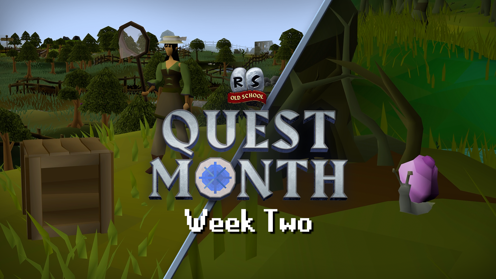
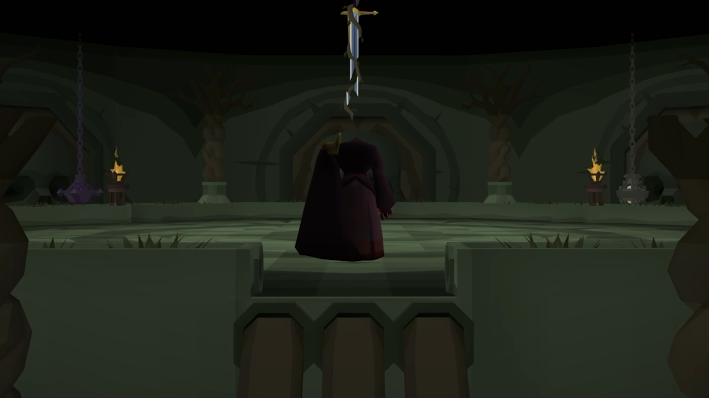
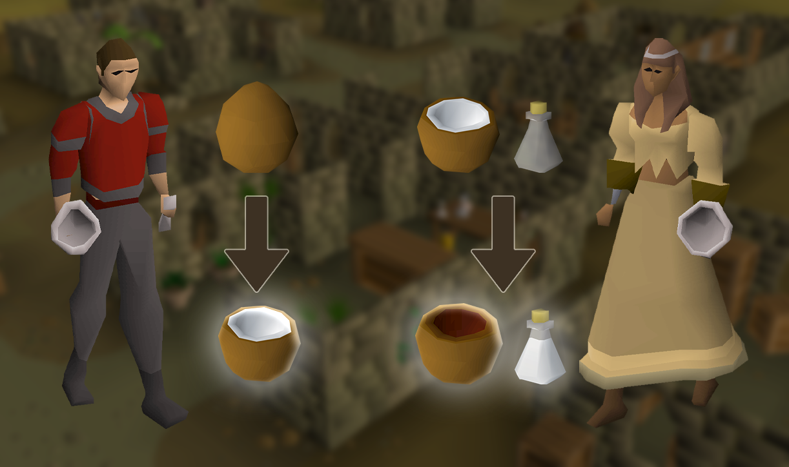
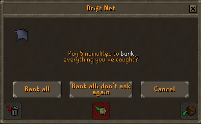
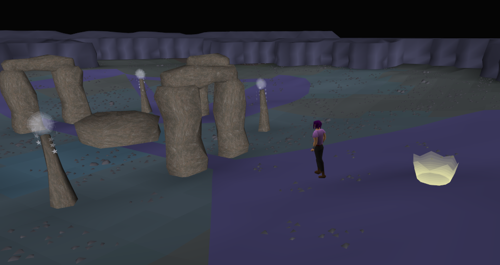
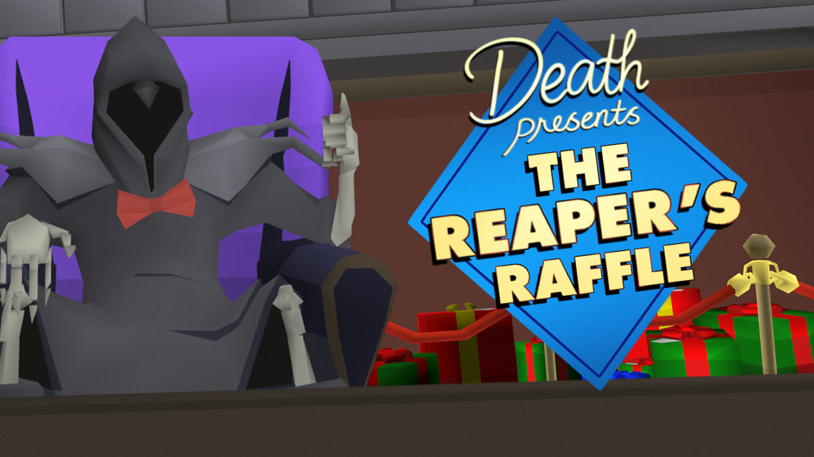
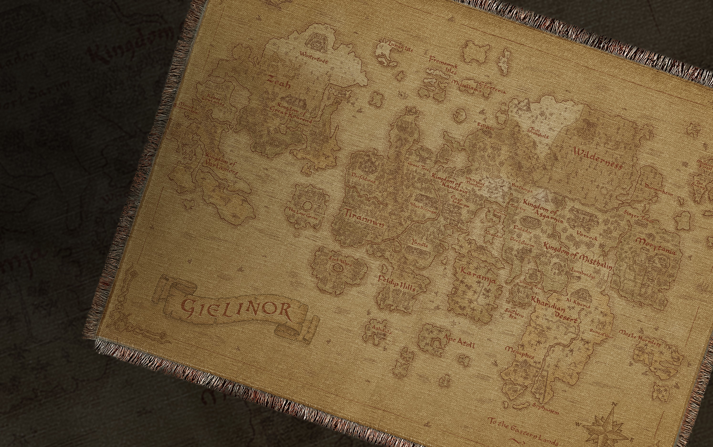

| Feedback | Status |
|---|---|
| To address the unintended DPS levels achieved through the 1-tick Obligator piercing method, we introduced a change to the action delay from the grubs at The Doom of Mokhaiotl. However, we’ve received a lot of feedback that this change has also made established methods, such as the 3-tick Twisted Bow method, impossible to perform. | This change has now been reverted in response to your feedback. Instead, we’ve deployed a fix that prevents the Obligator from dealing piercing damage through a target that has Protect from Melee active. |
The second week of Quest Month is here, with two more surprise adventures waiting to be discovered! Log in, find their starting points, and let the questing begin!
CLICK HERE TO SHOW
Quest Month Week Two
- Two more surprise quests are added as we enter the second week of Quest Month!
-
Mudfoot's Big Adventure will now auto-complete when setting up the following quests in Speedrunning worlds, meaning you can access the free weapons from Captain Harlan.
- Vampyre Slayer
- Black Knights' Fortress
- Demon Slayer
- Prince Ali Rescue
- Below Ice Mountain
- Dragon Slayer I
- Corrected the incorrect cipher symbol used in the puzzle of The Writing's on the Wall quest.
-
The previous training shield, sword and bow have been added to Diango's store, located in the Draynor Village Market.
- They've been renamed to 'Painted' shield, sword and bow.
- They have the same stats as a Bronze Kiteshield, Bronze Shortsword and a Shortbow.
Lumbridge Tidy-Up Tweaks
- Following your feedback, the Lumbridge Castle has been restored to its previous, classic layout. (More info in its main section further down the blog)
TFA Balance Changes
-
Archive Guardian
- Flying form's Light Ranged Defence reduced from 75 to 55.
- Grounded form's Magic Defence reduced to 50, Fire Weakness increased to 80%. With more people establishing a 'Standard spellbook' role in their groups, this might serve as a solid option here for any would-be wizards without the strongest options in other styles.
- Inert Guardian base HP reduced by 30.
- Fixed a bug where destroying an Inert Guardian could transfer all of its damage dealt to the shield to the Guardian's HP also.
-
To compromise, we've adjusted the Inert Guardian behaviour slightly:
- Destroying an Inert Guardian will still deal 40% of the Archive Guardian's shield as damage during the first phase.
- During the second phase, destroying an Inert Guardian will deal 15% of the Archive Guardian's HP as damage if there's no shield.
- During the second phase, if destroying an Inert Guardian would deal overkill damage to the Archive Guardian's shield, any excess damage will be dealt to its HP instead, up to a maximum of 15% of its HP.
-
Ezekiel
- Dodging swords now restores 5% Special Attack Energy, up from 3%.
- Swords can now be charged up to 50% more.
- Swords have had their Air Weakness increased from 100% to 125%.
- Standard spell (namely air spells) projectiles now take a maximum of three ticks to reach the swords.
- The maximum damage that swords can deal to players has been reduced to a cap of ~70.
-
Bork & The Smorks
- Bork's base HP increased by 150. Smorks' base HP increased by 50.
- Bork will now remember the previous four tanks before experiencing overload and forgetting. This means that players in smaller groups should never find themselves tanking multiple times during the encounter.
-
Xarth
- Base HP reduced by 150.
- Stab Defence reduced from 115 to 60.
- Splashing on a corpse will no longer refund action delay. You might have to bring a more involved switch from now on if you're keeping on top of these for your team.
- Standard spell (namely water spells) projectiles now take a maximum of three ticks to reach corpses, and stun them for an additional eight ticks.
- Fire during the second phase can spread onto tiles occupied by players - mind your feet!
-
Dagon'Hai Trio
- The damage buff granted by killing imps has been increased from 25% to 33%.
- Successfully counterspelling the Dagon'Hai channelling an elemental spell will now always result in a max hit. This should help bump up contribution numbers for those of you responsible for interrupting this part of the fight, while also marginally speeding up the fight.
- Standard spell projectiles now take a maximum of three ticks to reach a member of the Dagon'Hai Trio.
-
Ocellus
- Phase 2's duration has been reduced by one portal per quadrant. The phase often felt like it outstayed its welcome, so we think shortening it should improve the overall pacing for Ocellus.
TFA Loot Scaling Tweaks
-
Adjusted loot scaling and rates to better incentivise players to run in 3+ size groups:
- Adjusted the base unique rate from 1 in 14 to 1 in 16.
- Increased the base HP for solos/duos by 10%. This should increase the raid duration by ~5-8%, but that's before factoring in the balancing changes from this week.
-
Switched to hard-coding specific base unique rates depending on the scale of the raid:
- 1 player: 1 in 16
- 2 players: 1 in 16
- 3 players: 1 in 12.5
- 4 players: 1 in 10.5
- 5 players: 1 in 9.5
- 6 players: 1 in 8.5
- 7 players: 1 in 8
- 8 players: 1 in 7.5
Other TFA Tweaks
- Defence-reducing Special Attacks now grants 50% of the Defence reduced as contribution for the room.
- Freezing/stunning zombies at Xarth now grants additional bonus contribution for the room.
- Ocellus' 10% 'backstab' damage bonus no longer applies while he's constantly turning around during his 'Untether.' attack.
- The Obligator's attacks are no longer treated as Area Sounds.
- Fixed a nasty bug where interrupting the Dagon'Hai ritual with the damage counterspell wouldn't stun the target.
- Fixed a bug where the Dagon'Hai trios Defence could not be reduced to 0 and was instead being incorrectly capped at 60%.
- Clicking on an opening door immediately after defeating the Archive Guardian will no longer stop your character in place once you reach the door, saving you valuable milliseconds.
- Increased the quantity of Ascension Shards received from the raid by 20%.
- Increased the chance to obtain an Ascension Shard from a successful Mining action from 1/3 to 1/2.
- Increased the number of charges provided by Ascension Shards to the Obligator by 3x. Players with charged Obligators should receive the difference in shards as a refund.
- Increased the drop rate of Elemental Fragments from 1/20 to 1/14.
Last Batch of Gathering Efficiencies
- Wesley will now crush Coconuts into Half Coconuts for the usual crushing fee, which is 50 GP.
-
Zahur will now decant Half Coconuts and Empty Vials into Coconut Milk and Coconut Shells.
- She does this for free if you provide the Empty Vials, and for the cost of the Empty Vial if you don't.
- Coconuts and Empty Vials provided can be either in noted or unnoted form.
- Added a 'Don't warn me again' dialogue option when paying the 5 Numulite fee when banking Drift Nets, saving you from having to dismiss the warning each time. You can re-enable the warning through the Settings menu.
- The Portal at the Law Altar has been moved closer to the altar, so that its distance from the altar is consistent with other Runecraft altars.
- You can now enter the Law Altar through the Abyss while having weapons and armour equipped.
Other Changes
Since the Obligator was added to the game, we've seen it being used at the Doom of Mokhaiotl to pierce through grubs at 1 tick speed. We love seeing you discover new ways to interact with content, and this piercing interaction is no exception. However, the resulting DPS goes beyond what was intended. To address this, at The Doom of Mokhaiotl, attacking a grub with a damage style it is praying against will no longer reset the action delay.This change has now been reverted in response to your feedback. Instead, we’ve deployed a fix that prevents the Obligator from dealing piercing damage through a target that has Protect from Melee active.- Opening menus, such as the bank, while typing into the Display Name menu, no longer blocks keyboard inputs.
- Fixed an issue which could cause keyboard inputs to be blocked after closing the Settings menu by opening other interfaces.
- Zulrah has been restored to the Boss Kill Log.
- The help button on the Managing Miscellania interface is now functional again.
- The description of the Hat of the Eye has been corrected to reflect that it is a hat.
PvP Rota
The PvP rota has moved to Period B:
- 560 - (UK) - PvP World
- 319 - (US) - Bounty Hunter World
- 579 - (US) - High-Risk PvP World
- 561 - (UK) - Free-to-Play PvP World
- 580 - (US) - LMS Competitive
World 390 (AUS) for LMS Competitive has been de-activated with this rota.
World 569 (AUS) for Bounty Hunter has been de-activated with this rota.
The PvP Arena is using '1 Def Pure' loadouts in Ranked Duels and Tournaments this week.

Last week marked the start of Quest Month, with the release of November's first two surprise quests. We've loved seeing you dive into these quests and re-live that nostalgic sense of wonder that comes with discovering new-found adventures. Now, it's time for week two, with more adventures waiting to be discovered when you log in! If you missed our RuneFest Summit and want to catch up, check out the details in the dedicated proposal blog and its rewards poll.
Since a big part of Quest Month is the surprise effect, we'll reveal as little as possible and let you wing it... But let's just say we hope you'll be buzzing for this week's quests!
Our main quest this week is a fun adventure that introduces budding 'Scapers to the Hunter skill. Alongside it, we have a short and sweet quest that has you helping out an unlikely friend in need. Hop in-game, get questing and see where these lil' adventures take you!
Now, let's talk about the rewards, shell we?
The first quest will reward you with:
- 1 Quest Point
- Access to four new low-level Hunter creatures
- 1,000 Hunter XP
- 250 Fletching XP
- Access to buying a supply bag using the items made during the quest. This supply bag consists of coins and a variety of low-level loot such as darts, arrowheads, headless arrows and leather that are useful for early-game adventurers
The second quest will reward you with:
- 1 Quest Point
- 2,500 Herblore XP
- 2,500 Construction XP
- And above all, a mystery cosmetic reward
We hope you keep enjoying Quest Month, and we're looking forward to hearing what you think of this week's adventures! Before we continue to other sections, let's take a look at the tweaks we've got related to the quests released last week…
-
Mudfoot's Big Adventure will now auto-complete when setting up the following quests in Speedrunning worlds, meaning you can access the free weapons from Captain Harlan.
- Vampyre Slayer
- Black Knights' Fortress
- Demon Slayer
- Prince Ali Rescue
- Below Ice Mountain
- Dragon Slayer I
- Corrected the incorrect cipher symbol used in the puzzle of The Writing's on the Wall quest.
-
The previous training shield, sword and bow have been added to Diango's store, located in the Draynor Village Market.
- They've been renamed to 'Painted' shield, sword and bow.
- They have the same stats as a Bronze Kiteshield, Bronze Shortsword and a Shortbow.
Last week, the layout of the Lumbridge Castle's upper floor was adjusted to give it more thematic coherence and provide better pathing for new players.
Your response was loud and clear: You want the original Lumbridge Castle back, and we recognise that we should have communicated our intentions more clearly. Following your feedback, we've now reverted this change and have restored Lumbridge Castle to its previous layout.

It's been three weeks since The Fractured Archive's release and we're ready to make a couple of changes now that we've got a bunch of great data and feedback from all of you.
We'll start with some unfortunate news - we'd planned to release Practice Mode this week but ran into a number of critical bugs while testing and have chosen to hold fire. These bugs were severe enough that we'll need to rewrite large chunks of the Practice Mode, but getting this into your hands will be a top priority for us and we hope to deliver it as soon as possible.
Before we get into balancing specifics, we wanted to say that we're actually really happy with the pace and overall feel of the raid, which it seems like is the case for many of you too! That means we're not looking to take a sledgehammer to every room and drastically change every encounter, so this section might prove a little lighter than you were expecting - let's take a look.
Note that throughout this section, 'base HP' will crop up a lot, which refers to the HP of an NPC in either a solo or duo raid.
Starting us off is the Archive Guardian (or Archie, for short). The Archive Guardian might be the first boss of the raid, but it packs a serious punch (and can take a couple too). We've got a few simple statline changes here that might help players in slightly weaker setups:
- Flying form's Light Ranged Defence reduced from 75 to 55.
- Grounded form's Magic Defence reduced to 50, Fire Weakness increased to 80%. With more people establishing a 'Standard spellbook' role in their groups, this might serve as a solid option here for any would-be wizards without the strongest options in other styles.
- Inert Guardian base HP reduced by 30.
The more substantial change here relates to the Inert Guardians and how they deal damage. For those of you unaware, the popular strategy at Archive Guardian now is to trigger its finale phase, get its shield just below 40%, then let its beam attack destroy a crystal which will deal 40% damage to its shield and its health. This is a bug that we'd been on the fence about fixing, but we think that over time having the meta for a boss be to have everybody start clicking the floor and stop hitting it entirely feels weird, so we'd like to fix the bug and try to introduce some similar behaviour for you to play around!
Here's what we're doing:
- Destroying an Inert Guardian will still deal 40% of the Archive Guardian's shield as damage during the first phase.
- During the second phase, destroying an Inert Guardian will deal 15% of the Archive Guardian's HP as damage if there's no shield.
- During the second phase, if destroying an Inert Guardian would deal overkill damage to the Archive Guardian's shield, any excess damage will be dealt to its HP instead, up to a maximum of 15% of its HP.
This might slow things down a touch but we think it's the healthier approach long-term since it still rewards correct Inert Guardian usage and doesn't result in a meta where you're all expected to click the floor and just wait for the boss to destroy itself.
We've loved seeing more and more people shift over to Ezekiel over the course of TFA's lifespan, but we think the room could be a little more rewarding for players who choose to opt in to as much of the complexity as possible.
- Dodging swords now restores 5% Special Attack Energy, up from 3%.
- Swords can now be charged up to 50% more.
- Swords have had their Air Weakness increased from 100% to 125%.
- Standard spell (namely air spells) projectiles now take a maximum of three ticks to reach the swords.
- The maximum damage that swords can deal to players has been reduced to a cap of ~70.
For being the simpler of the two choices here, this room's probably a little too fast when compared to pulling out all the stops at Ezekiel, and also has some frustrating randomness for smaller groups.
- Bork's base HP increased by 150. Smorks' base HP increased by 50.
- Bork will now remember the previous four tanks before experiencing overload and forgetting. This means that players in smaller groups should never find themselves tanking multiple times during the encounter.
No changes!
Xarth's in an unusual spot, we'd hoped to have him feel a little bit like 'the calm before the storm' for the overall flow of the raid, but he's perhaps too calm at the moment: plus meleeing barely feels worth it during P2 if you're not rocking an Obligator, Water spells see little use here compared to freezes, and the fight can feel like a bit of a drag.
- Base HP reduced by 150.
- Stab Defence reduced from 115 to 60.
- Splashing on a corpse will no longer refund action delay. You might have to bring a more involved switch from now on if you're keeping on top of these for your team.
- Standard spell (namely water spells) projectiles now take a maximum of three ticks to reach corpses, and stun them for an additional eight ticks.
- Fire during the second phase can spread onto tiles occupied by players - mind your feet!
It took a little longer for people to lab this room out but we've seen a noticeable shift in people opting to take on the Dagon'Hai Trio in the last two weeks and wanted to make some tweaks to speed it up a little while rewarding those willing to make full use of some mechanics.
- The damage buff granted by killing imps has been increased from 25% to 33%.
- Successfully counterspelling the Dagon'Hai channelling an elemental spell will now always result in a max hit. This should help bump up contribution numbers for those of you responsible for interrupting this part of the fight, while also marginally speeding up the fight.
- Standard spell projectiles now take a maximum of three ticks to reach a member of the Dagon'Hai Trio.
Additionally, we're working on a fix that we hope to deploy next week so that the shots from the Venator Bow now only consume one of the buffed attacks rather than three.
Here it comes. The big one. The final boss. We've seen loads of praise for Ocellus as an encounter both within the raid and within OSRS in general, which definitely has us a little anxious when it comes to the changes we're about to propose.
Though it's bold of us to make such sweeping changes here, we think they'll be healthier in the long-term, so without further ado:
- Phase 2's duration has been reduced by one portal per quadrant. The phase often felt like it outstayed its welcome, so we think shortening it should improve the overall pacing for Ocellus.
That's all we've got on Ocellus, and all we've got for encounter balancing in general. We're keen to hear what you make of these and above all else hope that the flow of the raid still feels just as good as before, with slightly better room balance, better options for players outside of BiS gear, and more reasons to opt-in to some of the rooms' complexity!
Of course, running the raid isn't the full story when it comes to game balance, so let's address a group-sized elephant in the room…
In case you missed it, we released a bunch of information on loot rates and weightings alongside last week's Game Update, which included some of the specifics around how group size affects unique chance.
Many of you felt we'd missed the mark with the scaling elements, so we've been talking through adjustments as a team this week and wanted to lay everything out as clearly as possible.
To start us off and make sure we're on the same page, here's what we took from your feedback last week and set out to discuss:
- Duo clears feel disproportionately rewarding. There was some contention here around duos feeling 'out of line' with TFA being a team raid, while others argued that they're the toughest scale and it makes sense for them to be the best.
- As an individual, your chance at a purple in your name decreases sharply as soon as you add a third player to the group.
- As a downstream effect, larger scales feel vastly undertuned to the point of being entirely not worth doing. Some players argued that it makes sense for large scales to take longer to see uniques in your name, while others advocated for a more 'flat' approach similar to at Tombs of Amascut.
From here, we laid out some of our thinking to make sure we were clear on what we wanted to do:
- Duos are the riskiest and toughest scale outside of solos (with a ~31% completion rate prior to last week's update), so it does make sense for them to be good. However, we agree that the disparity between duos and other scales is too great, particularly when jumping from duos to trios. We should also be mindful to not over-correct for duos since experienced players do enjoy running them - they made up ~15% of all clears prior to us providing any loot mechanics.
- With no exact knowledge of loot mechanics, trios were the most popular scale (accounting for ~32% of all clears), so it makes sense for us to try and optimise for what players naturally tended towards by increasing the appeal of trios in particular.
- 8-player raids are considerably safer and less interactive than smaller scales, so we're not comfortable with repeating Tombs of Amascut's approach of having a 'flat' curve since the raids scale very differently (i.e. in an 8-man TOA, outside of Akkha, everybody in the raid is broadly doing the same thing). Having said that, they shouldn't be so much worse than other scales that they feel like an active waste of time (taking almost 4x as long to see a unique in your name) even if you're just trying to have some casual or silly fun with friends. They're also not a very popular scale, and making them the best option further disadvantages players with small friend groups over dedicated clans.
- Compared to other raids, the 'time to complete' or 'time to obtain the chase megarare' at The Fractured Archive is already quite generous, so we don't want any changes we make to drastically speed this up or significantly increase the inflow of unique items.
We do think it makes sense to try and flatten the curve a little while still allowing smaller scales to shine, and particularly to get more people back to running 3- and 4-player scales.
Here's how we're looking to change things, and a few graphs that we think tap into the key talking points from last week's discussion.
- Adjust the base unique rate from 1 in 14 to 1 in 16.
- Increase the base HP for solos/duos by 10%. This should increase the raid duration by ~5-8%, but that's before factoring in the balancing changes from this week.
-
Instead of a 4% increase in unique chance per player added, we'll switch to hard-coding specific base unique rates depending on the scale of the raid:
- 1 player: 1 in 16
- 2 players: 1 in 16
- 3 players: 1 in 12.5
- 4 players: 1 in 10.5
- 5 players: 1 in 9.5
- 6 players: 1 in 8.5
- 7 players: 1 in 8
- 8 players: 1 in 7.5
For those of you looking for a more visual representation, we've got two key graphs that we think tell the clearest story of how this shifts the numbers.
Duos do remain the best option but get a touch worse than they currently are, where current averages result in a little over 2 hours extra before seeing a unique in your name. Trios in particular have a much stronger value-proposition than before considering their lower risk and higher comfort levels when compared to duos.
At the very top end, your expected hours per unique in your name if you're running 8-man raids is a little under 2x the time it would take in a duo. We think it's healthier for these larger scales to be slower considering how much more comfortable they are, but agree that them taking almost 4x as long was wildly out of step with your expectations.
We saw a notable shift towards duos after last Tuesday's news, but our hope is that the coming weeks will see more people distribute them back into 3-5-scale groups in particular and see some more of those larger scales coming back into play.
Let us know what you think and how you find your raids this week. We're sorry to have fallen short of your expectations initially but hope these changes are more in-line with what you want to be doing inside the Archive!!
Outside of the bigger balancing changes, we've got a handful of smaller tweaks and fixes going out this week.
- Defence-reducing Special Attacks now grant 50% of the Defence reduced as contribution for the room.
- Freezing/stunning zombies at Xarth now grants additional bonus contribution for the room.
- Ocellus' 10% 'backstab' damage bonus no longer applies while he's constantly turning around during his 'Untether.' attack.
- The Obligator's attacks are no longer treated as Area Sounds.
- Fixed a nasty bug where interrupting the Dagon'Hai ritual with the damage counterspell wouldn't stun the target.
- Fixed a bug where the Dagon'Hai Trio's Defence could not be reduced to 0 and was instead being incorrectly capped at 60%.
- Clicking on an opening door immediately after defeating the Archive Guardian will no longer stop your character in place once you reach the door, saving you valuable milliseconds.
- Increased the quantity of Ascension Shards received from the raid by 20%.
- Increased the chance to obtain an Ascension Shard from a successful Mining action from 1/3 to 1/2.
- Increased the number of charges provided by Ascension Shards to the Obligator by 3x. Players with charged Obligators should receive the difference in shards as a refund.
- Increased the drop rate of Elemental Fragments from 1/20 to 1/14.

- Wesley will now crush Coconuts into Half Coconuts for the usual crushing fee, which is 50 GP.
-
Zahur will now decant Half Coconuts and Empty Vials into Coconut Milk and Coconut Shells.
- She does this for free if you provide the Empty Vials, and for the cost of the Empty Vial if you don't.
- Coconuts and Empty Vials provided can be either in noted or unnoted form.

We've added a 'Don't warn me again' dialogue option when paying the 5 Numulite fee when banking Drift Nets, saving you from having to dismiss the warning each time.
If you change your mind, you can re-enable the warning through the Settings menu.

- The Portal at the Law Altar has been moved closer to the altar, so that its distance from the altar is consistent with other Runecraft altars.
- You can now enter the Law Altar through the Abyss while having weapons and armour equipped.
With these released, all changes have now gone out and that's a wrap for Gathering Efficiencies changes!
Since the Obligator was added to the game, we've seen it being used at the Doom of Mokhaiotl to pierce through grubs at 1 tick speed. We love seeing you discover new ways to interact with content, and this piercing interaction is no exception. However, the resulting DPS goes beyond what was intended. To address this, at The Doom of Mokhaiotl, attacking a grub with a damage style it is praying against will no longer reset the action delay.This change has now been reverted in response to your feedback. Instead, we’ve deployed a fix that prevents the Obligator from dealing piercing damage through a target that has Protect from Melee active.- Opening menus, such as the bank, while typing into the Display Name menu, no longer blocks keyboard inputs.
- Fixed an issue which could cause keyboard inputs to be blocked after closing the Settings menu by opening other interfaces.
- Zulrah has been restored to the Boss Kill Log.
- The help button on the Managing Miscellania interface is now functional again.
- The description of the Hat of the Eye has been corrected to reflect that it is a hat.

The Reaper's Raffle is still underway! For those out of the loop, completing Death's set of tasks will bag you entries into his upcoming raffle that features prizes like a Custom Statue of Death, OSRS Merch and even a Starforge OSRS PC Bundle!
Just hopping onto Hardcore Worlds will bag you an entry and you can track the tasks through our handy newspost, if you'd like.
And thanks to you busy bees, you've already completed nearly all of the World Goals, which means you've added £7,000 and a second Starforge PC Bundle!
Make sure to mark your calendars for December 8th, when we'll be announcing all of the winners live, alongside some insight into Hardcore Worlds.
For those looking to bring Gielinor into the real world, we've rounded up some of the latest goodies from our merch store!
Both a 'Scaper and a Skater? We've got just the thing for you! King Black Dragon and Tzkal-Zuk Skateboard Decks are perfect for bringing a little RuneScape flair to the streets or adding to your collection, especially for displaying on your wall! You can check out more details about these decks here.
Check out the new lines from the one and only Angels Scapes:
- Dragonfire Shield Metal Miniature Display
- Elysian Spirit Shield Metal Miniature Display
- The Fractured Archive Reward Pins
- Imbued God Cape Keyrings collection and Elder Maul Keyring
- Imbued God Staffs collection
- Eldritch Nightmare Staff Pin and Dinh's Bulwark Pin
Want more info about these goodies? Let's take you here and here.

A unique illustration of the world of Gielinor as described by Saradomin: the 'precious jewel in the looted treasure of the Cosmos' - now available as a premium woven tapestry blanket.
The PvP rota has moved to Period B:
- 560 - (UK) - PvP World
- 319 - (US) - Bounty Hunter World
- 579 - (US) - High-Risk PvP World
- 561 - (UK) - Free-to-Play PvP World
- 580 - (US) - LMS Competitive
World 390 (AUS) for LMS Competitive has been de-activated with this rota.
World 569 (AUS) for Bounty Hunter has been de-activated with this rota.
The PvP Arena is using '1 Def Pure' loadouts in Ranked Duels and Tournaments this week.
You can also discuss this update on the 2007Scape subreddit, the Steam forums, or the official OSRS Discord. For more information, check the official Old School Wiki.
Mods Abe, Abyss, Acorn, Ape, Arcane, Archie, Argo, Ash, Asherz, Ayiza, BigRig, Blighted, Blossom, Boko, Brooksie, Bulb, Chilly, Criminal, Curse, Daizong, Default, Doctor, Ed, Elena, Enigma, Entropi, Forge, Frogs, Fuzz, Gecko, Ghost, Gizmo, Goblin, Grace, Grub, Halo, Harold, Hend, Hornet, Husky, Ivory, Jalo, Jamesy, Jerv, Keyser, Kieren, Kirby, Kurotou, Leebleh, Lenny, Liron, Lotus, Lykos, Mack, Maeve, Manked, Markos, Maylea, Mobius, Moogle, Morty, Moz, Necro, Nin, Nixon, Nox, Nylu, Oasis, Onyx, Ori, Other, Otter, Pheasant, Philomel, Pork, Pumpkin, Puppi, Pyro, Rach, Redfield, Rice, Roy, Ry, Saiyan, Sarnie, Schmidt, Shogun, Shroom, Sigma, Skylark, Smithy, Sova, Spacebar, Spool, Spyro, Squid, Starry, Suharun, Surma, Sween, Tide, Titania, Titus, TJ, Tomb, Tsourorf, Tyran, Veda, Vegard, West, Wolfy, Yozora, Yume & Zaf
The Old School Team